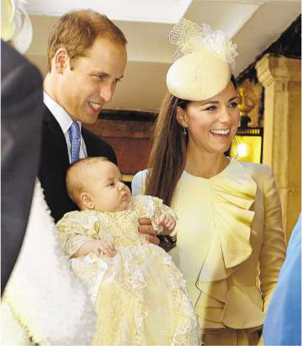

EUROPE EDITION
VOL. XXXI NO. 188
$1.75 (C/V) - KES 250 - NAI 375 - £1.70
THURSDAY, OCTOBER 24, 2013
WSJ.com
Heir to the British Throne Is Christened
Prince William and the Duchess of Cambridge were at St. James’s Palace, London, with their son, Prince George, for his christening Wednesday. The 3-month-old is third in line to Britain’s throne
Euro Zone Is Failing in Push For Closer Ties
Europe’s quest to ensure the euro’s long-term survival by forging a deeper political union is fizzling out
A European Union summit starting Thursday was meant to pave the way for tighter coordination of economic policies, but now is expected to make little progress. Many European officials say they are losing hope of reaching a deal in the next year to build elements ofacommon government for the 17 countries that use the euro, including shared spending, borrowing and support for banks and depositors.
Germany is leading the resistance. In Vilnius, Lithuania
Europe News
ECB outlines review of bank balance sheets......4, 28 Berlin says U.S. may have tapped Merkel’s phone.........4 Capital: Europe’s unsustainable strategy.........6
last month, German Finance Minister Wolfgang Schäuble orchestrated a revolt against a proposal to let EU officials decide when euro-zone banks should be wound down or restructured. The proposal was part of a “banking union” in which Europe as a whole would stand behind its lenders. Many countries favor the concept because it would take pressure off weaker countries to support their banks alone. But German officials see parts of it as a green light for EU bu
reaucrats in Brussels to spend Germany’s money to rescue banks in Ireland or Spain. Mr. Schäuble mustered a coalition in Vilnius to block the proposal, recruiting EU members such as the U.K. that don’t use the euro and don’t want more powers for Brussels.
The quest foradeeper union was born last year at the height of financial-market panic in Europe, when fear was widespread that the euro might collapse. The crisis showed that sharing one currency among 17 countries with separate policies is an unstable formula. Although financial markets have calmed since then, the euro zone still is struggling with debt, unemployment and impaired banks, especially in Southern Europe.
European countries already have taken many steps
Please turn to page 5
China’s President Praises
Group of Global Executives
By Laurie Burkitt
BEIJING—China has spent the past year telling foreign companies to clean up their acts. Names ranging from Apple Inc. to Starbucks Corp. to Volkswagen AG have come under intense scrutiny from government-controlled media for the way they treat Chinese customers.
So executives at some of the world’s biggest multinational companies could perhaps be forgiven if they felt a sense of whiplash on Wednesday, when the country’s top Communist Party official publicly sought their advice.
“Many of you are renowned entrepreneurs and business leaders in the world
today and you all have profound insight on the global economy, so that is why we attach great importance to the suggestions you offer,” Chinese President Xi Jinping told a group of nearly two dozen top foreign executives gathered in a building where Beijing entertains its most exalted guests. “Your suggestions areavery important source of inspiration for the Chinese government.” It wasn’t clear whether the group had a chance to discuss business issues in the world’s No.2economy—reporters were ushered out of Beijing’s Diaoyutai State Guesthouse after Mr. Xi’s remarks. But the remarks made in public were supportive. “You have all
made positive contributions to China’s education of economic management,” he said. “I highly appreciate what you have done.”
Mr. Xi spoke beforeagathering of the advisory board of Tsinghua University School of Economics and Management, which includes executives from around the world intended to be a sounding board for business issues in China. Attendees from consumer-brand names included Coca-Cola Co. Chairman and Chief Executive Muhtar Kent, Wal-Mart Stores Inc. Chief Executive Mike Duke, PepsiCo
Please turn to page 17
U.S. movies slip in a buoyant China market........................ 17